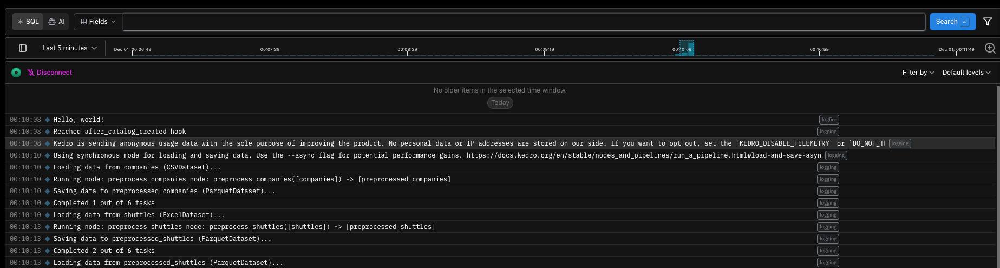

Full code example on GitHub: https://github.com/noklam/kedro-logfire-example
I started exploring observability tools lately and naturally I encounter Logfire, an Python observability library that is built by the Pydantic team. I was wondering how hard it is to integrate Kedro with it and whether it needs a seperate plugin. To my surprise, it’s pretty easy to get started.
The only thing you need is to update the logging.yml (make sure you choose logging when you start a new project), otherwise you can grab it from the template logging.yml.
````diff handlers: … + logfire: + class: logfire.LogfireLoggingHandler
- rich:
- class: kedro.logging.RichHandler
- rich_tracebacks: True
Advance options for customisation.
See https://docs.kedro.org/en/stable/logging/logging.html#project-side-logging-configuration
tracebacks_show_locals: False
Once you have configure the logging setting, you can start a run with:
```bash
kedro runThen you may see the log messages in the console. (You will see a different link, make sure you also create an account on Logfire and authenticate first)
Logfire project URL: https://logfire.pydantic.dev/noklam/kedrologfireexample
16:10:10.321 Using synchronous mode for loading and saving data. Use the --async flag for potential performance gains. https://docs.kedro.org/en/stable/nodes_and_pipelines/run_a_pipeline.html#load-and-save-asynchronouslyIt works quite seemlessly and I can see live log on Logfire platform immediately. 
Conclusion
It’s quite easy to get started with Logfire and Kedro. Next time I’d like to dive deeper into Logfire’s features.